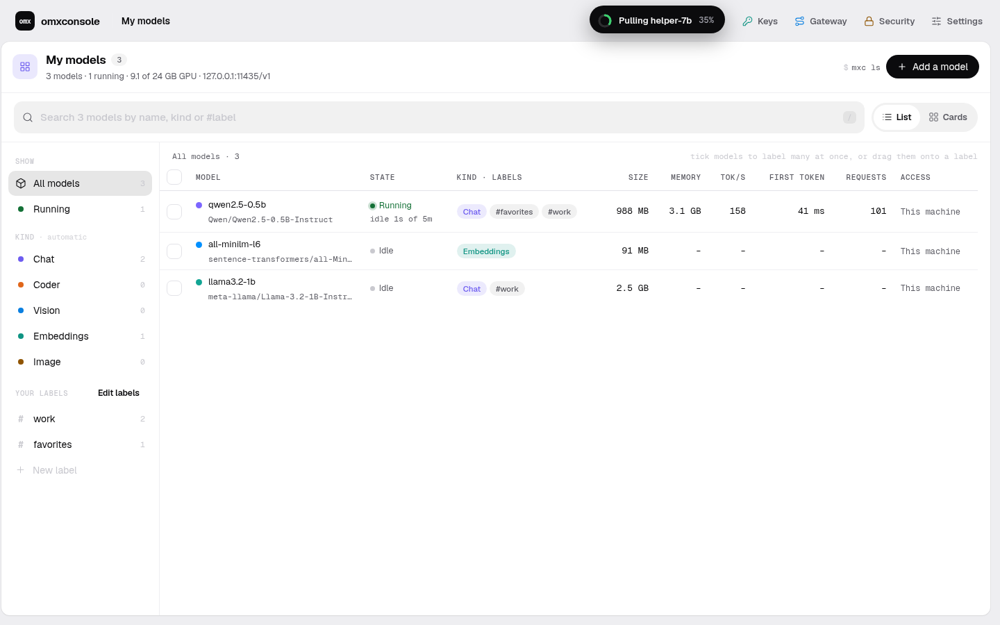

One framework for every app. Starting with data apps.
Write an app once in Mojo, as two functions. It runs natively, keeps the window live while the GPU does the heavy work, and every app is a set of tools agents can use.
Why did the robot drop it? 63,344 real robot episodes from 13 labs, their video and 16.8M telemetry rows, linked by key and time. A question in words over every row in about 40 ms.
↳ DROID (CC-BY-4.0) · docs/goals/47-report.md · M0–M8 PASS
One framework for everything. Data apps first.
A serious app today is four programs: an interface per platform, data work on a server, graphics in a shader language, and an API for agents. omxcode makes them one Mojo program. We start where that pays most: apps that move a lot of data between the screen and the GPU.
Every app is two functions.
view() describes the screen. update() reacts to a tap, a key or an agent's call. Less to learn, and less for an agent to get wrong.
viewdef view(self) -> View: return Button("Tapped " + String(self.n), on_tap=TAP)
updatedef update(mut self, e: Event): if e.message == TAP: self.n += 1
Every app is an MCP tool server.
Buttons, fields and JS widgets become tools, with no per-app work. A disabled button isn't a tool, so an agent can't do what a person couldn't.
file-save
Search…→search {text}
Delete→no tool
tokens for a call that answers in words; a full screen read is 2,800 · docs/agent.md
Ask an agent. It answers with a screen.
Over AG-UI the reply is UI as data: native components, checked against the catalog before anything draws.
web and Linux · tested with the official AG-UI SDK
Slow work runs beside the screen.
update() only decides. Queries, video decoding and OCR run as jobs on their own threads and come back as events. A watchdog names any frame over budget.
# slow work is a job; update() hears LANDED when it ends self.running = start_ui_job( StepJob(self.orders.value(), self.filters)) def jobs_message(self) -> Int: return LANDED # MOJOUI_BUDGET_MS=16: anything over budget is named SLOW: update msg=7 80.06 ms
a 1.5 s job: 90 frames drawn meanwhile, longest gap 17 ms · examples/jobwake, Linux
Four reasons.
No JSON, no HTTP, no second process.
Nothing extra to start, keep alive and debug. Apps that move a lot of data between the screen and the computing are faster and simpler.
From pixels to GPU kernels.
Mojo writes the interface and the CUDA-class kernels. In omxplorer, the group-by kernel sits in the same codebase as the sheet that shows its totals.
Every app can be driven by an agent.
omxcode has an agent host, so each app can be operated by an agent through the same code that draws its screens. JS apps need that built in separately.
Native on every device from one codebase.
Phone included. Linux and the Mac run today; Android runs on the emulator and iPhone builds, with phones next on the roadmap.
Start with apps that move a lot of data: analytics, spreadsheets, video, documents, robotics. For forms, CRUD screens and marketing sites, JS wins today on ecosystem alone; when a JS library is the better tool, embed it as a widget inside omxcode. SaaS building blocks (sign-in, accounts, payments) are on the roadmap.
Where it's going. One step at a time.
Data apps first, then every screen, then every kind of app. Each step ships when its checks pass.

SaaS apps
Sign-in, accounts and payments as components, so a whole product is one Mojo program.
planned
Real screens. Nothing mocked up.
Every picture here is the framework running. Clips are recorded by scripts in the repo.


One program. The window never waits.
Press Play to follow a tap, or click any block to read what it does.
One app.mojo, one process: native screens on each platform, MCP tools and AG-UI screens for agents, jobs and the GPU underneath.
Building blocks, each one tested.
What each family solves, and where a script runs it today. Generated from the code and the checks.
117 run on Linux and the web under a script on every check. The bars: tested, then builds.
Mac apps run on GitHub's macOS runners (scripts/mac-ci); checking each component there is next.
Browse all 121Data and sheets
Spreadsheets and analytics over millions of rows: grids, pivots, charts, KPIs, SQL.
DataGrid, PivotTable, ChartView…21 tested on Linux and the web14Video and vision
Videos as data: play, scrub, analyze into rows, cut reels, decoded off the UI thread.
VideoSource, Player, TimeSeries…14 tested on Linux and the web5Maps and robotics
Telemetry beside its video, routes and findings on a map, inspections compared.
Geo, Inspection, MapView…4 tested on Linux and the web10Documents
PDFs as pages and tables: read them (OCR), find fields, pack the evidence.
PdfSource, Document card, OcrModel…9 tested on Linux and the web3Links
Tables, videos and documents connected by key, time or place, confirmed by you.
Links, Link drag, Peek…2 tested on Linux and the web1Agents
Screens an agent builds as data, checked against the catalog, drawn natively.
GenUi…1 tested on Linux and the web28App parts
The pieces every app needs: shells, lists, fields, logs, code, feedback.
Ink stroke, CodeBlock, LogView…27 tested on Linux and the web36Controls and layout
The native controls: text, buttons, fields, menus, dialogs, stacks, canvases.
Text, Button, Icon…36 tested on Linux and the web3JavaScript widgets
Libraries from npm inside a native app: an editor, charts, your own.
mx-counter, mx-chart, mx-editor…3 tested on Linux and the webgenerated by scripts/site_components.py from docs/components.json and docs/components.md
Numbers, with where they came from.
Each build written from its own stack's docs, run by the same script on the same machine. Lower is better.
A change over 100M rowsinput to pixels · median ms
32 filter changes × 3 runs, at commit 856a7e9; the release build re-checked only at 10M · docs/data-benchmark.md
The slowest 5 % of changesinput to pixels · p95 ms
every build matched DuckDB's answers · docs/data-benchmark.md
A frame at 20M particleson screen · mean ms
WebGPU wins by 4 % · native Rust, offscreen only here: 5.99 · why.html
Where others win: Rust + Polars uses less memory at 100M rows (3.6 GB, no GPU; omxcode 5.6 GB plus 5.7 GB on the GPU) · native Rust starts the particle field in 211 ms · these numbers need an NVIDIA GPU (omxplorer also runs its queries on Apple's Metal).
Available today.
Free and open source, MIT. Start on Linux with an NVIDIA GPU.
Mac Apple Silicon
omxplorer as a Mac app, its queries on the GPU through Metal.
Download for MacmacOS 26 · older: the CPU build · not notarised: xattr -dr com.apple.quarantine OmxplorerMojo.app
Linux best today
The full app, the GPU underneath.
git clone https://github.com/abhisheksreesaila/omxcode cd omxcode && pixi install scripts/omxplorer.sh
The source MIT
The hosts, the look, the GPU code and their tests.
Download the sourceHow it works · llms.txt for agents